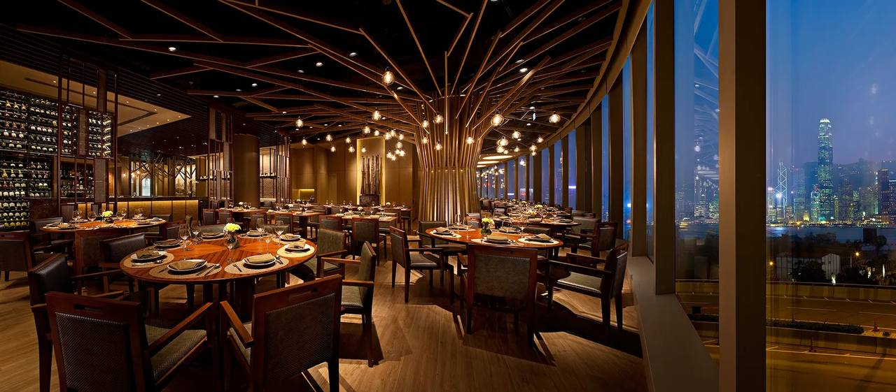

Наш кофе
В "То Самое Кафе" мы особенно гордимся нашим кофе. Мы тщательно выбираем только лучшие сорта арабики и робусты, чтобы предложить вам насыщенный, ароматный и сбалансированный напиток.
Наши бариста мастерски готовят эспрессо, капучино, латте и другие кофейные напитки, уделяя внимание каждой детали, от помола до температуры подачи.
Мы также предлагаем сезонные кофейные миксы с добавлением специй и натуральных ароматизаторов, чтобы сделать ваше посещение ещё более уникальным и приятным.
Приходите насладиться чашечкой кофе в уютной атмосфере "То Самое Кафе". Мы уверены, что это станет вашим любимым ритуалом дня!